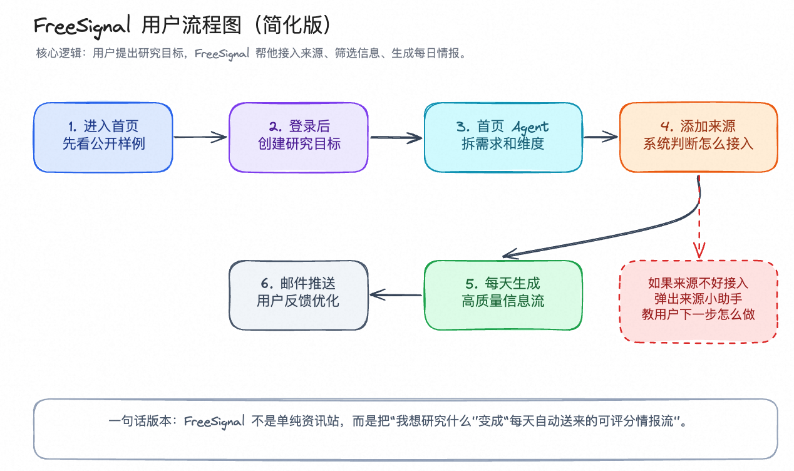
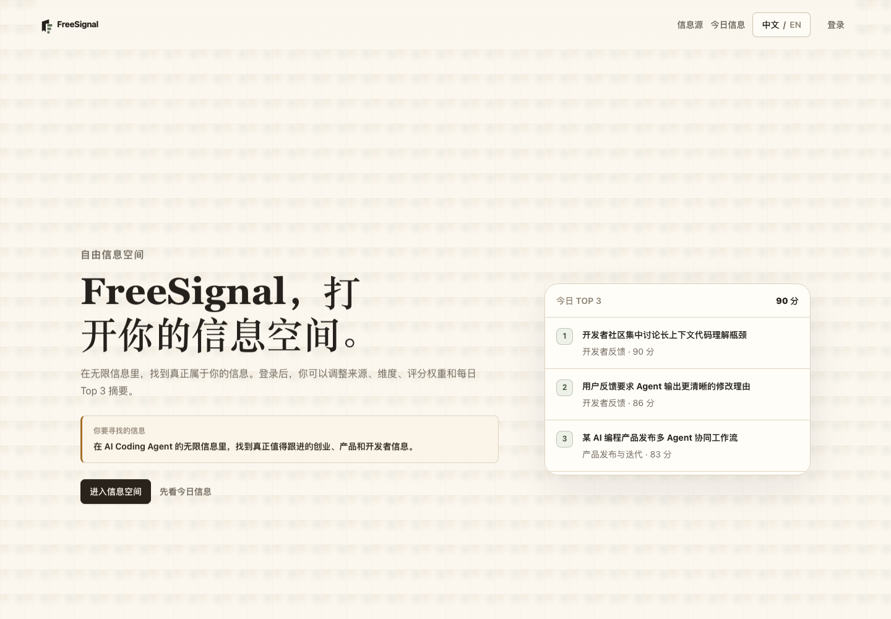
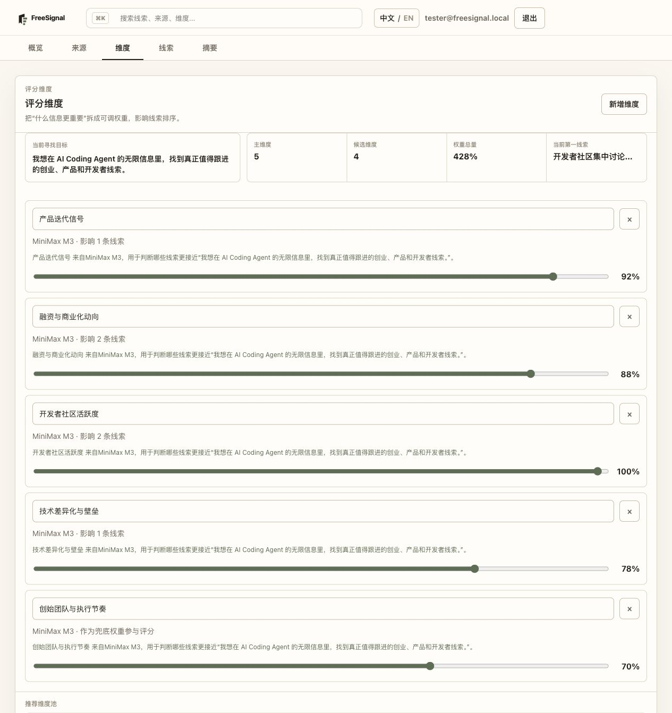
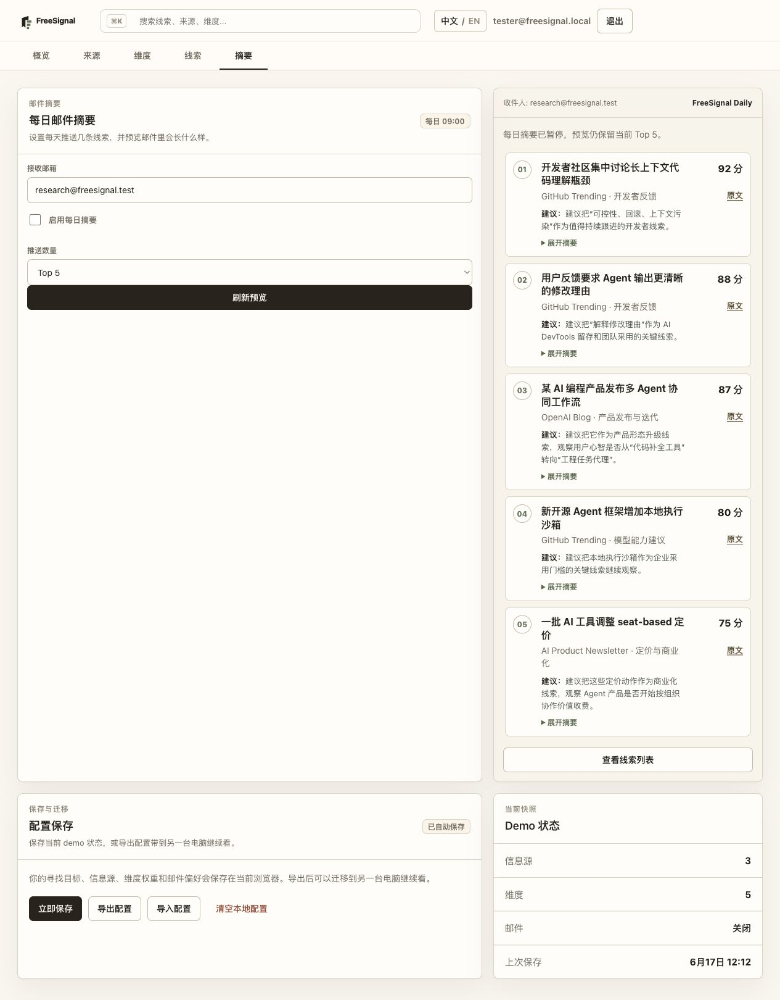

用户从研究目标、来源接入、维度拆解到每日信息流的完整流程。
Case Study
一个面向信息来源诊断、维度生成、信号发现、摘要整理和每日邮件推送的 C 端 HTML 信息产品。

用户从研究目标、来源接入、维度拆解到每日信息流的完整流程。

首页与来源诊断入口。

从来源生成可追踪维度。

信号摘要和每日推送结构。
FreeSignal 体现的是从个人信息需求出发，把散乱来源转成可运营信号流的能力。当前展示仅使用本机真实截图，不额外编造用户数据。